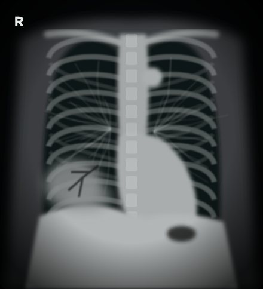
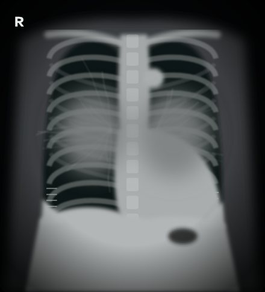
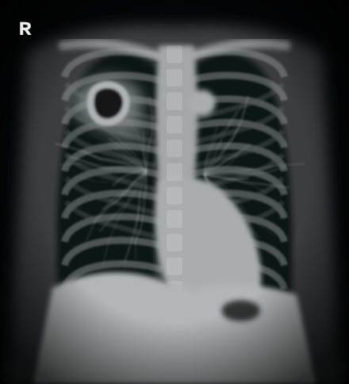
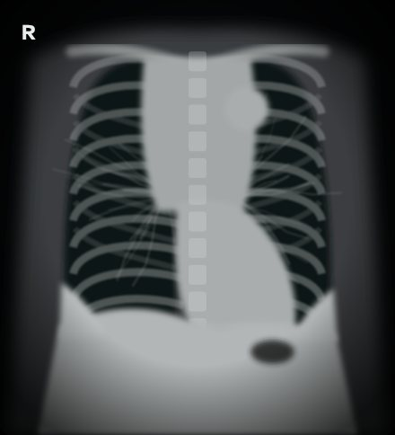
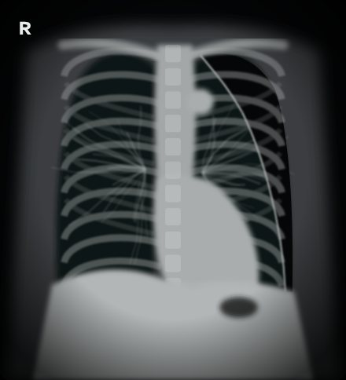
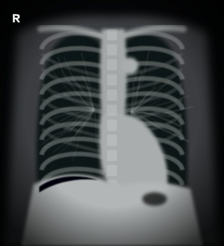
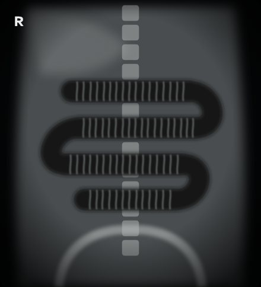

Zebra Shift guide · 7 pictures
X-ray findings to spot
Use the same order every time: check it is the right patient and film, then look at the airway, lungs and pleura, the heart and mediastinum, the diaphragm and anything below it, and finally the bones and soft tissues.
Right lower lobe consolidation with air bronchograms

A fluffy white opacity in the right lower zone with dark branching air bronchograms inside it, and the right heart border still visible: lower lobe, not middle lobe.
Often confused with: Right pleural effusion · Right pneumothorax · Normal chest film
In the game: Community-Acquired Pneumonia
Pulmonary oedema: big heart, bat-wing shadowing, effusions

Cardiomegaly, perihilar bat-wing haze, short horizontal Kerley B lines at the bases and blunted costophrenic angles: fluid overload.
Often confused with: Bilateral pneumonia · Normal chest film · Miliary tuberculosis
In the game: Acute Pulmonary Oedema
Right upper lobe cavity

A thick-walled ring with a dark centre and patchy shadowing around it in the right upper zone: a cavity. In this story, tuberculosis.
Often confused with: Right upper lobe collapse · Pancoast tumour at the apex · Normal chest film
In the game: Pulmonary Tuberculosis
Widened mediastinum with pleural effusions

The upper mediastinum is much wider than it should be, with fluid at both bases. In a sick patient: haemorrhagic mediastinitis or a dissection.
Often confused with: Cardiomegaly · Normal chest film · Bilateral hilar lymphadenopathy only
In the game: Inhalational Anthrax
Left pneumothorax: a visible lung edge with no markings beyond it

A thin white pleural line runs parallel to the chest wall, and outside it there are no lung markings at all. The trachea is central, so it is not under tension.
Often confused with: Bullous emphysema · Normal chest film · Left pleural effusion
In the game: Primary Spontaneous Pneumothorax
Free gas under the right hemidiaphragm (pneumoperitoneum)

A smooth dark crescent separating the right hemidiaphragm from the liver on an erect film: free intraperitoneal gas from a perforated viscus.
Often confused with: Chilaiditi sign (bowel between liver and diaphragm) · Normal gastric bubble only · Right lower lobe pneumonia
In the game: Perforated Peptic Ulcer
Dilated central small-bowel loops with valvulae conniventes

Several dilated, centrally placed loops stacked like a ladder, crossed by thin lines that go all the way across (valvulae conniventes): small bowel, not colon.
Often confused with: Large bowel obstruction with haustra · Sigmoid volvulus (coffee-bean sign) · Normal bowel gas pattern
In the game: Small Bowel Obstruction